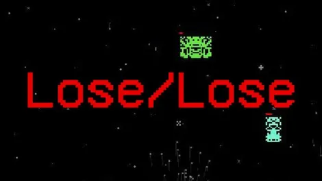
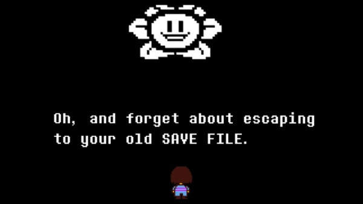
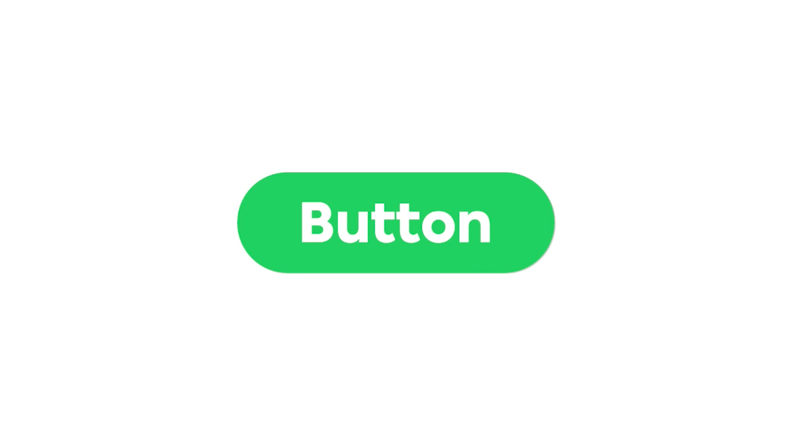
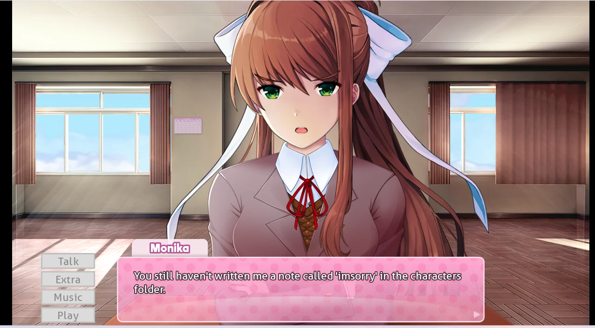

>
*Metal Gear Solid* - Psycho Mantis Reads Your Memory Card
1998
An in game boss fight where a psychic enemy reads your actual memory card data and forces you to physically switch controller ports to defeat him.

*Lose/Lose* - Deletes Real Files
2009
A Space Invaders clone where each alien is a real file on your computer, and shooting them permanently deletes these files from your system.

*OneShot* - Desktop Problem-Solving
2014/2016
A puzzle adventure where the protagonist directly acknowledges your existence, requiring you to manipulate actual system files and your computer desktop to guide them home.

*Undertale* - Save-State Awareness
2015
An RPG that remembers your actions across save files and resets, with characters becoming increasingly aware of your power to manipulate their timeline.

*clickclickclick.click* - Browser Surveillance
2016
A website that narrates your every move, from mouse movements to idle time, transforming simple browsing into an uncomfortable performance under surveillance.

*Doki Doki Literature Club* - Monika Reads Your Files
2017
A dating simulator that becomes horror when one character gains awareness of her digital nature and begins manipulating your computer's actual files.
